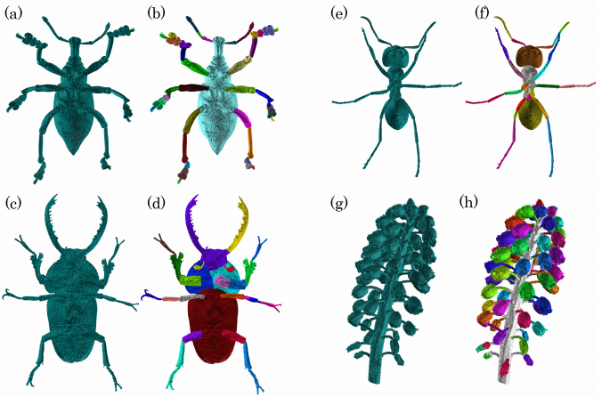

最小切断面を利用した2値画像の意味的領域分割
成田 智史, 井尻 敬
芝浦工業大学

概要. 本研究では，昆虫や植物などといった自然物の X 線 CT 画像に対する意味的領域分割アルゴリズムを
提案する．提案法は，昆虫や植物はくびれを境に意味の異なる領域に分かれることが多いという知見に基づく．提案
法は，二値化した X 線 CT 画像（ボクセルデータ）を入力とし，その前景領域を 2 分割する面積が局所最小な切断
面（くびれ）の検出を繰り返すことで, 意味的領域分割を実現する．このくびれの検出は，Split 処理，Regrow 処
理，MinCut 処理という 3 ステップから構成され，Split 処理と Regrow 処理はモルフォロジー演算により実現され，
MinCut 処理はグラフカット法により実現される．提案法の精度検証のため，二つの円を組み合わせた人工画像に対
して提案法を適用し，提案法による分割結果と正しい分割結果との比較を行った．結果，誤差画素率 2%未満という
高い精度でくびれを検出できることを確認した．また，提案法の有用性を検証するため，昆虫や花のボクセルデータ
に提案法を適用し，花序内の小花，多肉植物の茎，昆虫の脚などという意味的に異なる領域を分割できることを確認
した．
Materials
link
author's preprint
@article{narita2018,
author="成田, 智史 and 井尻, 敬",
title="最小切断面を利用した2値画像の意味的領域分割 (VC2018特集)",
journal="画像電子学会誌 The journal of the Institute of Image Electronics Engineers of Japan : visual computing, devices & communications",
ISSN="2186-716X",
publisher="画像電子学会",
year="2018",
month="",
volume="47",
number="4",
pages="433-439",
}